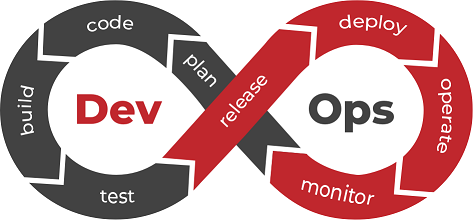
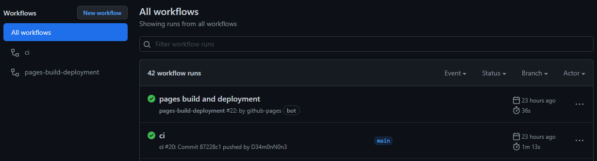
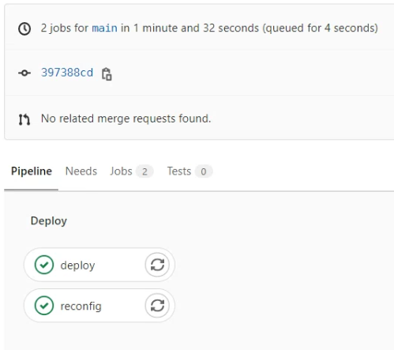
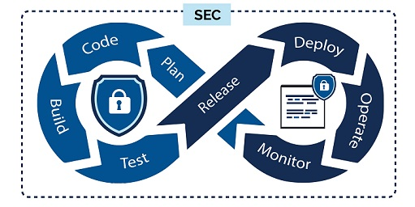

Методология, политика и стратегия внесения изменений¶
Введение¶
Прежде всего необходимо понять задачу и определится со способами ее достижения. Естественным является для бизнеса получения конкурентного преимущества и извлечение максимальной прибыли. В современной экономике использование цифровых инструментов в бизнес-решениях играет определяющую роль. Вместе с ростом сложности высокотехнологичных платформ важным фактором становится бесперебойность работы критически важных ИТ-систем. Неизбежным становится внедрение и использование автоматизации.
Автоматизация — одно из направлений научно-технического прогресса, использующее саморегулирующие технические средства и математические методы с целью освобождения человека от участия в процессах получения, преобразования, передачи и использования энергии, материалов, изделий или информации, либо существенного уменьшения степени этого участия или трудоёмкости выполняемых операций. Основная тенденция развития систем автоматизации идет в направлении создания автоматических систем, которые способны выполнять заданные функции или процедуры без участия человека. Роль человека заключается в подготовке исходных данных, выборе алгоритма (метода решения) и анализе полученных результатов.
Задача и подходы к ее реализации¶
Задача: повышение стабильности, ключевая цель для эксплуатации бизнес-решений. Для достижения ее чаше всего применяются два подхода.
Вариант 1:
Минимизация изменений, имеет эффект накапливания "технического долга" в виде систем и приложений, отчаянно нуждавшихся в обновлении, которые все боятся касаться, опасаясь что-то сломать.
Особенности:
Системное администрирование и другие эксплутационные роли отделяются от таких областей, как разработка и управления проектами.
-
Разработчики продвигают продукт с новыми функциями и улучшениями.
-
Эксплутационная группа обеспечивает непрерывное управление производственной средой.
Вариант 2:
Управление изменениями, это частое внесение изменений пока результат не будет соответствовать ожиданиям.
Объединение разработчиков (программистов, аналитиков, владельцев приложения, менеджеров проекта) со специалистами службы эксплуатации (администраторами: безопасности, сетевыми, системными, баз данных и т.д.).
Особенности:
-
Разработчики (Dev), специалисты службы эксплуатации (Ops) работают непрерывно. Несут равную ответственность за всю систему.
-
Ни одно приложение или служба не должны выпускаться без тестирования.
-
Все производственные среды зеркально отражаются в одинаковых средах разработки и тестирования.
-
Члены команды Dev и Ops должны находится в непрерывном общении, как стратегических, так и эксплуатационных вопросов.
Что же выбрать?¶
Так как цель одна, отличие только в подходе ее достижения, остается только выбрать нужный вариант. "Куда двигаться: назад в пещеры или вперед в пещеры?"
Оба подхода существуют давно. Первый преобладал долгое время и был широко распространен, под него проектировались как процессы, так и инфраструктура. Но современной тенденцией становится использование второго подхода. Частным случаем которого является применение методологии Continuous integration & Continuous delivery. У нее есть особенности, определяющие её преимущества и недостатки.
| Плюсы | Минусы |
|---|---|
| Минимальное время от запроса клиента до запуска в использование. Методология уменьшает время запуска обновлений до нескольких дней (в отдельных случаях, недель). Благодаря этому, разработчики получают возможность быстрее опробовать нововведения и внедрять решения быстрее. | Требования к опыту. В теории все корпоративные ИТ-системы можно перевести на CI/CD. Но на практике для получения результата нужен первичный опыт работы с методологией, а также правильная организация перестраивания всех процессов.. |
| Возможность проверки версий. Оперативное тестирование и много итераций помогают разработчику быстро выявлять версии, не имеющие перспектив, еще на начальных этапах. | Сложность обеспечения взаимодействия. Непрерывное обновление и непрерывная поставка должны быть четко скоординированы, что возможно только после тщательной настройки взаимодействия между специалистами всех уровней. |
| Качество результата. Проведение автоматического тестирования помогает выявить ошибки и другие проблемы на самых ранних этапах разработки. При стандартном релизном подходе это сделать сложно или невозможно. |
Для применения методологии необходимо разработать и внедрить следующие решения и процессы.
Контроль версий¶
Контроль версий, также известный как управление исходным кодом, — это практика отслеживания изменений программного кода и управления ими. Системы контроля версий — это программные инструменты, помогающие командам разработчиков управлять изменениями в исходном коде с течением времени. Программное обеспечение контроля версий отслеживает все вносимые в код изменения в специальной базе данных. При обнаружении ошибки разработчики могут вернуться назад и выполнить сравнение с более ранними версиями кода для исправления ошибок, сводя к минимуму проблемы для всех участников команды. Наибольшее распространение сейчас получил протокол git, одним из продуктов реализующих его является GitLab.
Управление конфигурацией¶
Управление конфигурацией — это процесс учета изменений, вносимых в систему с целью сохранения ее целостности. Обычно используются инструменты и методы, способствующие автоматизации процесса и наблюдению состояния системы.
Преимущества управления конфигурацией серверов состоят в способности определять вашу инфраструктуру как код. Это позволяет:
-
Использовать систему контроля версий для отслеживания любых изменений инфраструктуры;
-
Повторно использовать скрипты конфигурирования для нескольких серверных сред, например для разработки, тестирования и производства;
-
Упрощать процесс дублирования серверов для ускорения восстановления в случае сбоя системы.
Ansible — система управления конфигурациями, написанная на языке программирования Python, с использованием декларативного языка разметки для описания конфигураций. Используется для автоматизации настройки и развертывания программного обеспечения. Наряду с Chef, Puppet и SaltStack считается одной из наиболее популярных систем управления конфигурациями для Linux. Главное отличие Ansible от аналогов — не нужна установка агента/клиента на целевые системы.
Пользователь Ansible создаёт определённые «плейбуки» (англ. playbook, play — игра, пьеса, book — книга) в формате YAML с описанием требуемых состояний управляемой системы. «Плейбук» — это описание состояния ресурсов системы, в котором она должна находиться в конкретный момент времени, включая установленные пакеты, запущенные службы, созданные файлы и многое другое.
Пример установки и запуска службы Web сервера Nginx:
setup_nginx.yml
---
- name: Установка Nginx
package:
name: nginx
state: present
- name: Активация и затуск службы Nginx
systemd:
name: nginx
state: started
enabled: yes
masked: no
DevOps¶

Это CLAMS (Culture - Культура, Lean - Рациональность, Automations - Автоматизация, Measurement - Измерение, Sharing - Совместная работа)
-
Культура: Все работают вместе, чтобы поддерживать общий бизнес-драйвер (цель, продукт) на всех этапах его жизненного цикла.
-
Рациональность: Связь в реальном времени, и сосредоточенность на проблемах.
-
Автоматизация: Два основных аспекта а. если задача выполняется более двух раз, ее следует автоматизировать; б. не автоматизируй то, чего не понимаешь.
-
Измерение: Сбор метрик из сред окружения, для анализа аномалий и определения их причин. Метрики доступны и признаются все причастными.
-
Совместная работа: Участие во всех процессах жизненного цикла проекта.
Стратегия автоматизации¶
Элементы стратегии:
-
Автоматическая настройка новых узлов: установка и настройка ОС и всего необходимого ПО;
-
Автоматическое управление конфигурацией: конфигурация должна храниться в одной базе и применяться ко всем узлам одного типа;
-
Автоматическое продвижение кода: распространение нового функционала из среды разработки в тестовую среду и из тестовой в продуктивную. Тестирование автоматизированно;
-
Систематическое обновление и исправление существующих узлов.
Основные концепции¶
-
Непрерывная интеграция (CI) - процесс совместной работы с общей кодовой базой, автоматизированного слияния разрозненных изменений в единую сборку в системе контроля версий, и ее тестированием. Результатом является получение "артефакта", упакованного программного обеспечения.
-
Непрерывная доставка (CD) - процесс автоматизированного развертывания сборок в средах после завершения непрерывной интеграции. В результате происходит установка "артефакта" в серверную среду.
Конвейеры (Pipelines)¶
Конвейер CI/CD представляет собой последовательность шагов, называемых этапами. Каждый этап - это по существу сценарий, выполняющий задачи, специфичные для ПО.
Диаграмма конвейера CI/CD:
graph TD
A[Фиксация изменений] --> B[Сборка]
B[Сборка] --> C{Тесты} --> D[Развертывание в среде разработки] --> E{Тесты} --> F[Развертывание в тестовой среде] --> G{Тесты} --> H[Развертывание в продуктивной среде] --> I{Тесты}
C -->|Сбой| K[Плохая сборка]
E -->|Сбой| L[Плохая сборка]
G -->|Сбой| M[Плохая сборка]
I -->|Сбой| N[Откат]
N --> AРасмотрим два конвейера (Pipeline), для сборки статического сайта на примере mkdocs в GitHub и GitLab. Оба конвейера описываются в формате YAML манифестов с заранее определенным именем и расположением. У каждой системы CI/CD будет своя структура и синтаксис. В данных примерах не расматривается создание сценариев тестирования, так как результатом процессов являются статические данные.
Для информации
Описанное ниже является эквивалентом следующих операций:
* Скопировать проект. Команда: git clone <url_project>
* Собрать статический сайт. Команда: mkdocs build -c -f texdocs.yml -d "/var/www/base/docs/<site_name>"
* Перезапустить сервис. Команда: systemctl restart nginx.service
GitHub¶
Манифест располагается в внутри проекта по пути .github/workflows/ci.yml.
ci.yml
name: ci # Задает имя конвейера
on: # Задает когда необходимо запускать интеграцию, в данном примере сразу после внесения изменений в проект.
push:
branches: [ main ]
pull_request:
branches: [ main ]
jobs: # Содержит список задач.
deploy: # Имя сценария задач. В процессе выполнения происходит создание структуры статического сайта со всеми страницами, и публикацией его в отдельной ветке проекта.
runs-on: ubuntu-latest # Выбираем среду для сборки, в данном случае используем docker контейнер.
strategy:
matrix:
python-version: [ 3.8 ]
if: github.event.repository.fork == false
steps:
- uses: actions/checkout@v2
- name: Set up Python ${{ matrix.python-version }}
uses: actions/setup-python@v2
with:
python-version: ${{ matrix.python-version }}
architecture: x64
- name: Install upgrade pip
run: python3 -m pip install --upgrade pip # Обновления пакетов python перед установкой зависимостей и сборкой статического сайта.
- name: Install Python dependencies
run: python3 -m pip install . # Запускается скрипт `setup.py` для установки зависимостей.
- run: python3 -m mkdocs gh-deploy --force # Запускает скрипт сборки статического сайта и копирования его в отдельную ветку проекта.
setup.py
import json
from setuptools import setup, find_packages
# Load list of dependencies
with open("requirements.txt") as data:
install_requires = [
line for line in data.read().split("\n")
if line and not line.startswith("#")
]
# Package description
setup(
install_requires = install_requires,
)
Работа конвейера: 
Выше описан процесс интеграции, для процесса доставки используется функция GitHub Pages, которая просто использует ранее подготовленный сайт для подключения как виртуальный Web сервер.
GitLab¶
Манифест располагается в файле внутри проекта .gitlab-ci.yml.
gitlab-ci.yml
stages: # Задает имя конвейера
- deploy
deploy: # Задает имя списка задач.
stage: deploy
only: # Задает когда выполнять задачи, в данном примете сразу после внесения изменений в ветки проекта с названием main или master.
- main
- master
- merge_requests
tags:
- mkdocs # Определяет где будут запущенны сценарии.
before_script:
- if [ ! -d $CI_PROJECT_DIR/docs/assets ]; then ln -s /var/mkdocs/templates/docs/assets/ $CI_PROJECT_DIR/docs/; fi
- if [ ! -d $CI_PROJECT_DIR/material ]; then ln -s /var/mkdocs/templates/material/ $CI_PROJECT_DIR/; fi
- VIRT_SITE_NAME=$(cat texdocs.yml | python /usr/local/lib/python3.6/site-packages/shyaml.py get-value site_description)
script:
- cd $CI_PROJECT_DIR && sudo -u mkdocs /var/mkdocs/.local/bin/mkdocs build -c -f texdocs.yml -d "/var/www/base/docs/$VIRT_SITE_NAME" # Запускает скрипт сборки статического сайта и копирования его в директорию с остальными сайтами на сервере.
reconfig: # Задает имя списка задач.
stage: deploy
only: # Задает когда выполнять задачи, в данном примете сразу после внесения изменений в ветки проекта с названием main или master.
- main
- master
- merge_requests
tags:
- mkdocs # Определяет где будут запущенны сценарии.
script:
- sudo ansible-playbook /var/mkdocs/new_docs/playbook.yml # Запускает сценарий обновления конфигурации Web сервера, после добавления нового сайта.
Работа конвейера: 
В данном случае процесс интеграции происходит на целевом сервере, а интеграцию берет на себя специальный агент GitLab Runner запушенный на нем.
Конфиг фаил для GitLab Runner расположен в /etc/gitlab-runner/config.toml.
config.toml
concurrent = 1
check_interval = 0
[session_server]
session_timeout = 1800
[[runners]]
name = "documentation_ci" # Описание. Только для информации.
url = "http://.../" # URL-адрес экземпляра GitLab.
token = "..." # Токен аутентификации, который получается во время регистрации.
executor = "shell" # Способ выполнения сценариев.
builds_dir = "/var/mkdocs/"
[runners.custom_build_dir]
[runners.cache]
[runners.cache.s3]
[runners.cache.gcs]
[runners.cache.azure]
Автоматические тесты¶
Автоматические тесты - инструмент снижения издержек. Автотесты принято делить на три типа: модульные (юнит), сервисные и интеграционные (UI, браузерные, end‑to‑end, E2E) тесты.
-
Модульные тесты - проверяют работу отдельно взятых модулей — функций, классов, моделей, контроллеров — кирпичиков, из которых построено приложение. Модульные тесты выполняют проверки за миллисекунды, потому что тестируют модуль в отрыве от остального приложения.
-
Интеграционные тесты - проверяют приложение целиком, когда все модули в сборе. Их задача — убедиться, что модули правильно соединены друг с другом. Кроме того, ими проверяют те части приложения, которые не имеют права сломаться: биллинг, регистрацию, оформление заказа. Интеграционные тесты длятся секунды, а иногда и минуты: запускаем приложение, загружаем его в браузер или эмулятор и «прокликиваем» сценарии.
-
Сервисные тесты — среднее между интеграционными и модульными. Их задача — проверить функционал, который нельзя уверенно протестировать модульными тестами, а интеграционными тестировать «слишком жирно».
Отдельно существует статический анализ кода. Статический анализ кода - анализ программного обеспечения, производимый без реального выполнения исследуемых программ. Он проводится с целью проверки синтаксиса и обнаружения потенциально ненадежных частей кода (небезопасных функций или уязвимых библиотек).
Пример статического анализа сценариев Ansible
name: ansible-lint
on: [push]
jobs:
build:
runs-on: ubuntu-latest
name: ansible-lint
steps:
- uses: actions/checkout@master
- uses: actions/setup-python@v2
- run: pip install ansible ansible-lint
- run: ansible-lint --version
- run: ansible-lint .
image: python:3-slim
before_script:
- pip install ansible ansible-lint
- ansible-lint --version
stages:
- ansible-lint
ansible-lint:
stage: ansible-lint
script:
- ansible-lint .
Безопасность¶
Так как распределение процессов происходит централизованно из одной точки на основе маркеров. То необходимо предварительно настроить ограничения на всех узлах. К примеру, в разработке может происходить очистка всей среда вовремя сборки, что может привести к удалению данных в продуктивной среде по не осторожности. Или удалению данных в другом проекте, из-за указания неверного маркера. Для избежания подобных проблем настроить разрешение только необходимых операций в рамках конкретного проекта и среды.
DevSecOps¶

DevSecOps — сокращенно от development, security и operations — автоматизирует интеграцию задач безопасности на всех этапах жизненного цикла разработки программного обеспечения, от проектирования до интеграции, тестирования, развертывания и доставки ПО. Является расширением процесса DevOps с ориентацией на безопасность. Позволяет решать проблемы безопасности по мере их появления, когда это можно сделать с меньшими затратами времени и средств (до развертывания функций в рабочей среде). Автоматизация тестирования позволяет включить зависимости ПО в подходящие уровни исправлений и удостовериться в том, что продукт успешно прошел этап модульного тестирования безопасности.
Регулярные релизы и возможность быстро выпускать исправления ошибок стали новым стандартом для многих организаций, и ключевой частью их процессов является CI/CD-пайплайн. DevSecOps подчеркивает, что важно обеспечивать безопасность с самого начала, включая вопросы безопасности в культуру общего понимания и ответственности, а также встраивать проверки безопасности в автоматизированные тесты CI/CD-пайплайна. Как и в случае с операционной деятельностью, вместо того, чтобы внедрять требования и практики, связанные с безопасностью, уже после создания продукта, лучше выполнить сдвиг безопасности влево.
Мониторинг¶
В современных DevOps-архитектурах комплексного программного обеспечения существует множество данных, которые необходимо отслеживать. Больше недостаточно отслеживать только самые простые статистические данные, такие как RAM, CPU и дисковый I/O. Теперь ваше решение для мониторинга должно работать с API и передавать данные непосредственно с самих приложений. Для того, чтобы понять всю эту информацию, одним из критериев поиска нужной вам современной системы мониторинга должны стать возможности анализа в реальном времени потоковых данных, воспроизведения истории изменений и еще лучшие средства визуализации.
Осуществление сложного мониторинга становится первой линией защиты от простоев. Таким образом, системы мониторинга должны постоянно развиваться, чтобы принимать во внимание все новые данные. Это приводит нас к очень важному вопросу. В чем разница между сервисами мониторинга старой школы и сервисами мониторинга готовыми к DevOps? Если вы ошибетесь в выборе инструментария для осуществления мониторинга, вы столкнетесь с частыми и продолжительными простоями.
Итог¶
Для управления жизненным циклом продуктов с использованием непрерывной интеграции и доставки, необходимо создание регламентов и процессов постоянного вынесения изменения в программный код. Написание сценариев всех операций от развертыванию и подготовки сред, до сборки и установки программного кода.